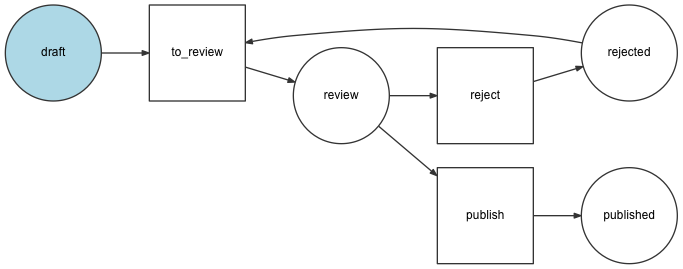
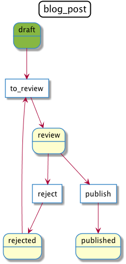
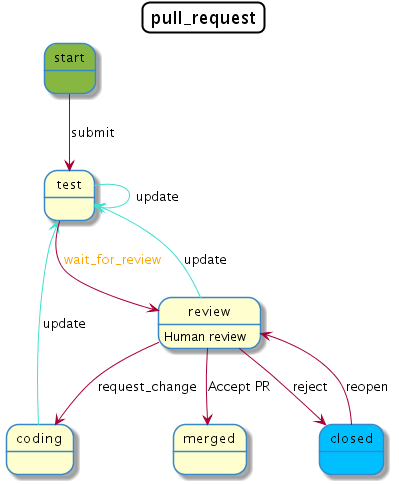

How to Dump Workflows¶
To help you debug your workflows, you can generate a visual representation of them as SVG or PNG images. First, install any of these free and open source applications needed to generate the images:
If you are defining the workflow inside a Symfony application, run this command to dump it as an image:
1 2 3 4 5 6 7 8 9 10 11 | # using Graphviz's 'dot' and SVG images
$ php bin/console workflow:dump workflow-name | dot -Tsvg -o graph.svg
# using Graphviz's 'dot' and PNG images
$ php bin/console workflow:dump workflow-name | dot -Tpng -o graph.png
# using PlantUML's 'plantuml.jar'
$ php bin/console workflow:dump workflow_name --dump-format=puml | java -jar plantuml.jar -p > graph.png
# highlight 'place1' and 'place2' in the dumped workflow
$ php bin/console workflow:dump workflow-name place1 place2 | dot -Tsvg -o graph.svg
|
The DOT image will look like this:
The PlantUML image will look like this:
If you are creating workflows outside of a Symfony application, use the
GraphvizDumper or StateMachineGraphvizDumper class to create the DOT
files and PlantUmlDumper to create the PlantUML files:
// Add this code to a PHP script; for example: dump-graph.php
$dumper = new GraphvizDumper();
echo $dumper->dump($definition);
# if you prefer PlantUML, use this code:
# $dumper = new PlantUmlDumper();
# echo $dumper->dump($definition);
1 2 3 | # replace 'dump-graph.php' by the name of your PHP script
$ php dump-graph.php | dot -Tsvg -o graph.svg
$ php dump-graph.php | java -jar plantuml.jar -p > graph.png
|
Styling¶
You can use metadata with the following keys to style the workflow:
- for places:
bg_color: a color;description: a string that describes the state.
- for transitions:
label: a string that replaces the name of the transition;color: a color;arrow_color: a color.
Strings can include \n characters to display the contents in multiple lines.
Colors can be defined as:
- a color name from PlantUML’s color list;
- an hexadecimal color (both
#AABBCCand#ABCformats are supported).
Below is the configuration for the pull request state machine with styling added.
- YAML
1 2 3 4 5 6 7 8 9 10 11 12 13 14 15 16 17 18 19 20 21 22 23 24 25 26 27 28 29 30 31 32 33 34 35 36 37 38 39 40 41 42 43 44 45 46 47 48 49 50
# config/packages/workflow.yaml framework: workflows: pull_request: type: 'state_machine' marking_store: type: 'method' property: 'currentPlace' supports: - App\Entity\PullRequest initial_marking: start places: start: ~ coding: ~ test: ~ review: metadata: description: Human review merged: ~ closed: metadata: bg_color: DeepSkyBlue transitions: submit: from: start to: test update: from: [coding, test, review] to: test metadata: arrow_color: Turquoise wait_for_review: from: test to: review metadata: color: Orange request_change: from: review to: coding accept: from: review to: merged metadata: label: Accept PR reject: from: review to: closed reopen: from: closed to: review
- XML
1 2 3 4 5 6 7 8 9 10 11 12 13 14 15 16 17 18 19 20 21 22 23 24 25 26 27 28 29 30 31 32 33 34 35 36 37 38 39 40 41 42 43 44 45 46 47 48 49 50 51 52 53 54 55 56 57 58 59 60 61 62 63 64 65 66 67 68 69 70 71 72 73 74 75 76 77 78 79 80 81 82 83 84 85 86 87 88 89 90 91 92 93 94 95 96
<!-- config/packages/workflow.xml --> <?xml version="1.0" encoding="UTF-8" ?> <container xmlns="http://symfony.com/schema/dic/services" xmlns:xsi="http://www.w3.org/2001/XMLSchema-instance" xmlns:framework="http://symfony.com/schema/dic/symfony" xsi:schemaLocation="http://symfony.com/schema/dic/services https://symfony.com/schema/dic/services/services-1.0.xsd http://symfony.com/schema/dic/symfony https://symfony.com/schema/dic/symfony/symfony-1.0.xsd" > <framework:config> <framework:workflow name="pull_request" type="state_machine"> <framework:marking-store> <framework:type>method</framework:type> <framework:property>currentPlace</framework:property> </framework:marking-store> <framework:support>App\Entity\PullRequest</framework:support> <framework:initial_marking>start</framework:initial_marking> <framework:place>start</framework:place> <framework:place>coding</framework:place> <framework:place>test</framework:place> <framework:place name="review"> <framework:metadata> <framework:description>Human review</framework:description> </framework:metadata> </framework:place> <framework:place>merged</framework:place> <framework:place name="closed"> <framework:metadata> <framework:bg_color>DeepSkyBlue</framework:bg_color> </framework:metadata> </framework:place> </framework:place> <framework:transition name="submit"> <framework:from>start</framework:from> <framework:to>test</framework:to> </framework:transition> <framework:transition name="update"> <framework:from>coding</framework:from> <framework:from>test</framework:from> <framework:from>review</framework:from> <framework:to>test</framework:to> <framework:metadata> <framework:arrow_color>Turquoise</framework:arrow_color> </framework:metadata> </framework:transition> <framework:transition name="wait_for_review"> <framework:from>test</framework:from> <framework:to>review</framework:to> <framework:metadata> <framework:color>Orange</framework:color> </framework:metadata> </framework:transition> <framework:transition name="request_change"> <framework:from>review</framework:from> <framework:to>coding</framework:to> </framework:transition> <framework:transition name="accept"> <framework:from>review</framework:from> <framework:to>merged</framework:to> <framework:metadata> <framework:label>Accept PR</framework:label> </framework:metadata> </framework:transition> <framework:transition name="reject"> <framework:from>review</framework:from> <framework:to>closed</framework:to> </framework:transition> <framework:transition name="reopen"> <framework:from>closed</framework:from> <framework:to>review</framework:to> </framework:transition> </framework:workflow> </framework:config> </container>
- PHP
1 2 3 4 5 6 7 8 9 10 11 12 13 14 15 16 17 18 19 20 21 22 23 24 25 26 27 28 29 30 31 32 33 34 35 36 37 38 39 40 41 42 43 44 45 46 47 48 49 50 51 52 53 54 55 56 57 58 59 60 61 62 63 64 65 66 67 68 69 70
// config/packages/workflow.php $container->loadFromExtension('framework', [ // ... 'workflows' => [ 'pull_request' => [ 'type' => 'state_machine', 'marking_store' => [ type: 'method', property: 'currentPlace', ], 'supports' => ['App\Entity\PullRequest'], 'initial_marking' => 'start', 'places' => [ 'start', 'coding', 'test', 'review' => [ 'metadata' => [ 'description' => 'Human review', ], ], 'merged', 'closed' => [ 'metadata' => [ 'bg_color' => 'DeepSkyBlue', ], ], ], 'transitions' => [ 'submit'=> [ 'from' => 'start', 'to' => 'test', ], 'update'=> [ 'from' => ['coding', 'test', 'review'], 'to' => 'test', 'metadata' => [ 'arrow_color' => 'Turquoise', ], ], 'wait_for_review'=> [ 'from' => 'test', 'to' => 'review', 'metadata' => [ 'color' => 'Orange', ], ], 'request_change'=> [ 'from' => 'review', 'to' => 'coding', ], 'accept'=> [ 'from' => 'review', 'to' => 'merged', 'metadata' => [ 'label' => 'Accept PR', ], ], 'reject'=> [ 'from' => 'review', 'to' => 'closed', ], 'reopen'=> [ 'from' => 'start', 'to' => 'review', ], ], ], ], ]);
The PlantUML image will look like this:
